PUBLIC TRANSPORT
公共交通機関で
お越しの方へ
藤が丘駅から名鉄バス「愛知医科大学病院」行きをご利用ください。
名鉄バスセンターから基幹バス「愛知医科大学病院」行きをご利用ください。
AICHI MEDICAL UNIVERSITY
ここがわたしの、夢の入り口。

AICHI MEDICAL UNIVERSITYOPEN CAMPUSSPECIAL SITE
2026 OPEN CAMPUS
2026年8月1日（土）・2日（日）のオープンキャンパスは終了しました
ご来場ありがとうございました。次年度の開催情報は、本サイトでお知らせします。
オープンキャンパスの参加受付は終了しましたが、申込ページから引き続きお申込みいただけます。
FACULTIES
開催記録と、次年度の最新情報をご案内します。
MOVIE STREAM
気になる動画から、キャンパスの空気に触れてみてください。
ACCESS
〒480-1195
愛知県長久手市岩作雁又1番地1
FREQUENTLY ASKED QUESTIONS